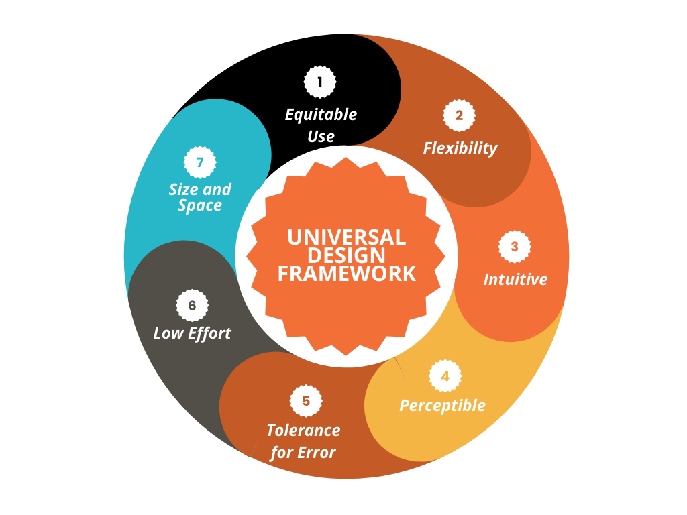

Divers users spectrum
The key of this challenge is first to understand and recognize the divers spectrum of user needs and abilities. In order to acknowledge this concept, we can summarize here the main parameters:
Types of disabilities:
recognize the duration of disability: temporally, permanent or due to the situation.
Accessibility spectrum:
since the accessibilities can be very different and various, the design need to be really flexible to provide solutions for different kind of ability levels. For example adjustable font-size of textse
Intersectionality:
Considering the existence of multiple factors can compound accessi- bility challenges if some users has more than one shortcomings.
Changing needs:
User needs can evolve during time, this put an highlight on elder people who may be limited in mobility and need the web to accommodate their needs.
Cultural diversity:
User cultural and linguistic differences can also make improvements in accommodating needs and enlarge the additional tools for people-disabilities orientation.
Seven principles of universal design
It is required a deep knowledge of how different people navigate the digital world. Another fundamental concepts are the seven principles of universal design:
| principle | description |
|---|---|
| Equitable use: | A website must let everyone decides whether they want to adjust the text size and color contrast based on their preference. |
| Flexibility in use: | The website let you decide your kind of interaction with interface: whether you tap, type or talk. It is better if it includes either fingertips or voice commands. |
| Simple and inductive use: | Simplicity and effectiveness over anything else. |
| Perceptible information: | A video player offering captions, audio descriptions or else, that ensure you won’t miss any informations. |
| Tolerance for error: | the website nicely provides to show you your errors without making you feel dumb.. |
| Low physical effort: | implementing shortcuts and content management with bulk actions in order to make every task simpler. |
| Size and space: | This translate to design that play nicely with all screens and fingers. Let’s create touch targets that are easy to tap and layouts that work great whether you’re on a phone or a desktop. |

Sources
- Dale Cruse & Denis Boudreau et al. Inclusive Design for accessibility. Year 2025. book.pdf